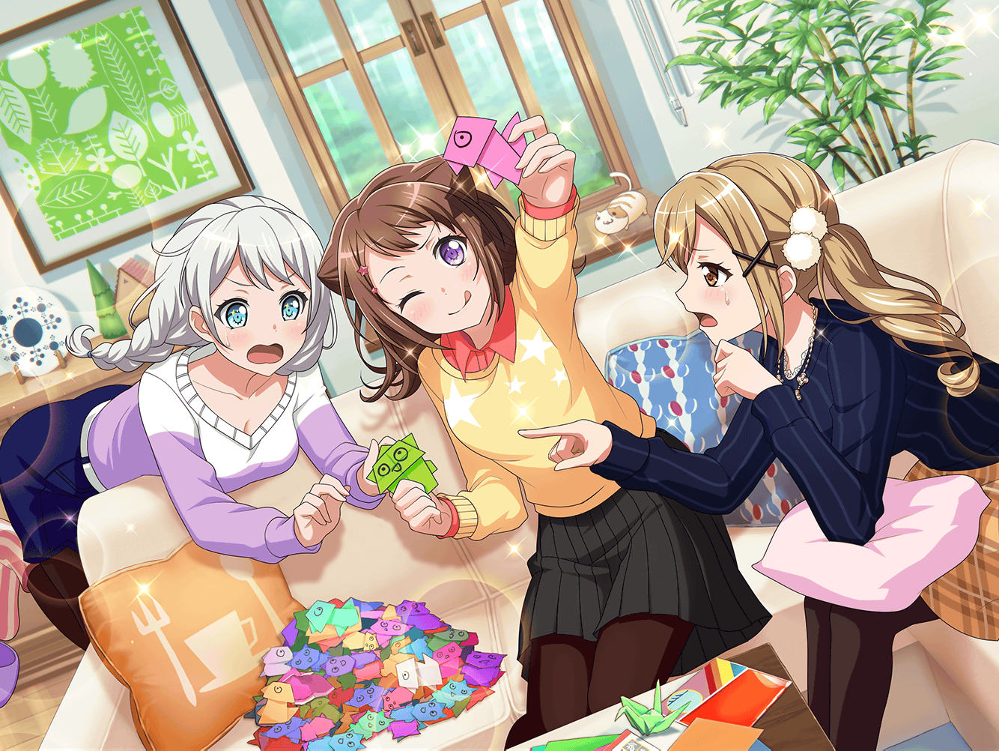
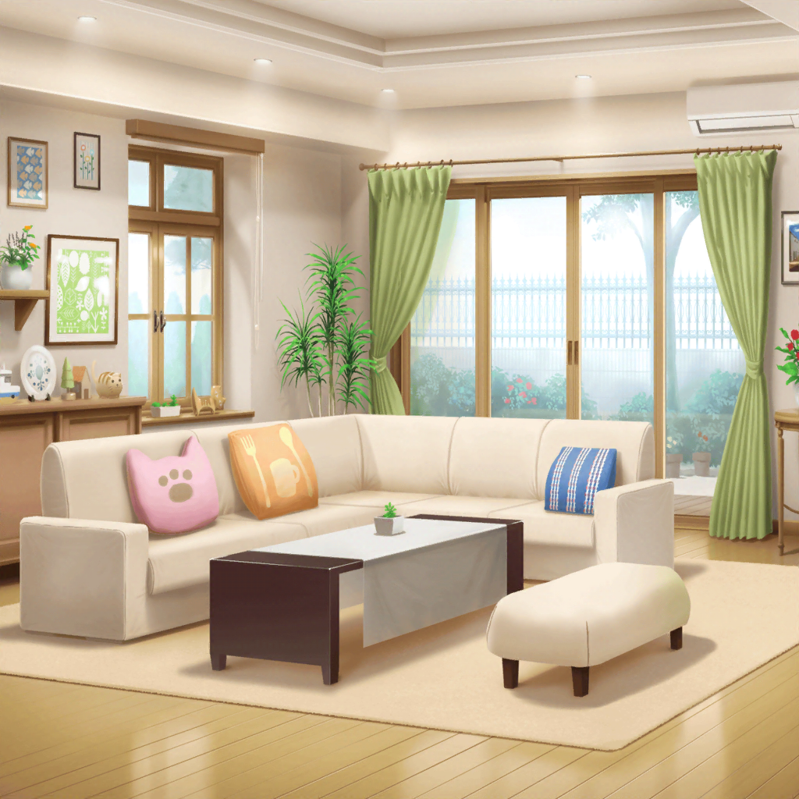

イヴの家
香澄
じゃーん！ みんな、見て！ 折れたよー、鶴っ！
りみ
わあ、できたの？ 見せて、香澄ちゃん〜
たえ
……あれ？ 鶴ってこんな形だっけ？
香澄
えっ？ こ、こんな形だよ〜、おたえ〜！
ほら、翼があって〜、バサバサ〜って。ね、鶴でしょ？
沙綾
うーん、頭みたいなのが３つあるけど……？
有咲
鶴に３つも頭ねーだろ。
お前、ちゃんと言った通りに折ったか？
香澄
ううっ、鶴って折るの難しくてさー。
何度もやり直してるうちによくわかんなくなっちゃった
有咲
……そんなことだと思った。
まったく、ちゃんと折り方聞いとけよなー
沙綾
ほら、鶴の折り方はこうして、ここを折って……こうだよ？
香澄
わ！ さーや、すごい！
あっという間に鶴折っちゃった！ 魔法みたいだよ〜！
沙綾
あはは、魔法はちょっとほめすぎだって。
前に妹に教えようと思って、練習したから作るの慣れてるんだ
有咲
つーか、ほら、鶴なら私だってすぐ折れるぞ
香澄
わあ！ 有咲もすごい上手！
なんで？ 有咲って折り紙得意なの？ なんで？
有咲
う、うるせーな！
得意っていうか、昔、ばあちゃんに教えてもらったんだよ。
鶴なんて難しくもねーし、覚えれば簡単だっつーの
香澄
そ、そうなんだ……！
よーし、私もがんばって早く折り方覚えるよ！
香澄
イヴちゃんの大事なパーティの飾り付けだもん！
素敵な折り紙で、イヴちゃんのお友達をおもてなししなくちゃ！
沙綾
うん、はるばるフィンランドから来てくれるんだもんね
りみ
私達の折った折り紙で喜んでくれたらうれしいな
有咲
ま、まぁな……
香澄
よーし、次こそはちゃんとした鶴を……
香澄
んー、あれ？ わかんなくなっちゃった……
有咲〜、ここどうやるの〜！
有咲
つまづくの早っ！？
がんばるって言った傍から、折り方忘れるなっ！
香澄
もう一回！ もう一回だけ折り方教えて、有咲〜！
有咲
め、めんどくせー……
香澄
あ〜り〜さ〜！ お願い〜〜！！
有咲
あーもう、わかったって。仕方ねーなー
もう一回だけだからな？ 今度はちゃんと覚えろよ？
沙綾
ふふ、なんだかんだ有咲って面倒見がいいよね
有咲
うぇっ！？ そ、そんなんじゃねーし！
香澄のやつがどうしてもっていうから、その……
沙綾
はいはい、わかってるって
りみ
沙綾ちゃん、鶴の折り方教えてもらってもいい？
私もちゃんと折れるか、ちょっと自信がなくて……
沙綾
いいよ。教えてあげる。
あ、おたえは折り方、大丈夫？
たえ
うん、順調。かわいいのができそう
沙綾
……えっと、おたえ？ それ、なんか違くない？
りみ
おたえちゃんの鶴かわいい〜！
なんだかふっくらしてるね。私もそれ折りたいよ〜
有咲
ちょっと待て、りみ。これ、違う鳥だから
りみ
え？ これ鶴じゃないの？
たえ
何が？ 鶴だよ？
有咲
いやいや、もう見た目からして違うだろ。
これはふくら雀っていうんだよ。鶴とは別物だから
たえ
でも、こっちの方がかわいいし、いいよね
有咲
何がいいんだよ！？
沙綾
あはは、おたえはほんとマイペースだね
沙綾
ま、その……なんとか雀でもいいんじゃない？
似てるし、いろいろあったほうがイヴの友達も喜ぶよ
有咲
い、いいのか〜？ 私は別にいいけど……
香澄
……できた！ 今度こそ、鶴できたよ！
有咲
おっ、妙に静かだと思ったら……できたのか？
香澄
うん！ 今度こそ完璧！ ほら、見てよ〜！
たえ
……あ、ちゃんと鳥
沙綾
うん、ちょっと歪んでるけど、鶴になってるよ
りみ
よかった〜！ やったね、香澄ちゃん！
有咲
ま、まあ、私が教えたんだから当然だけどな
香澄
ありがとう、みんな〜！
……あ、なんだかこの感じあれみたいだね！
りみ
あれって……？
香澄
楽器を始めた頃の感じ！
最初は全然弾けないけど練習していくうちに、
ちょっとずつ弾けるようになってくあの感じだよ！
たえ
あれ、すごく気持ちいいよね。
ちゃんと指が動くようになって、曲が弾けた時はうれしかった
りみ
うん、わかるよ。急にコツを掴める瞬間ってあったりするよね
香澄
ということは、楽器だって練習したら弾けるようになったし、
折り紙もこうして練習していけば、すっごく上手になれるかも！
いつか、私達も折り紙の達人になれちゃう……！？
たえ
うん、一緒に折り紙の達人を目指そう
有咲
おまえらいったいどこ目指すつもりだよっ！？
つーか、楽器だってまだまだ達人じゃねーだろ！！
沙綾
あはは、じゃあ楽器も折り紙も頑張らないとね
香澄
うん、頑張ってキレイな鶴、たくさん作っちゃおう〜！